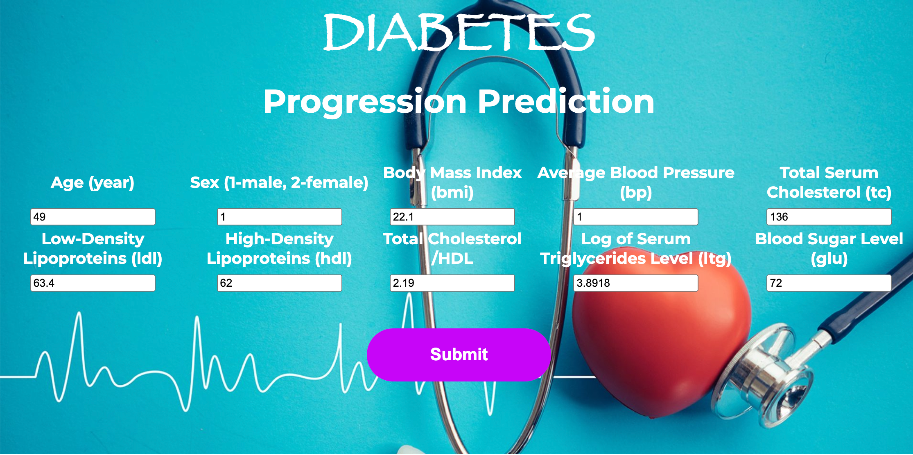

In the realm of real estate analysis, accessing and analyzing housing data efficiently is paramount for informed decision-making. In this project, I undertook the task of transforming raw housing data into a structured and usable format using SQL Server. By leveraging SQL Server's powerful capabilities, I enhanced the usability of the data, making it more accessible for comprehensive analysis and insightful insights.


Summary:
In response to the alarming rate of road accidents in Kenya, a Python-powered project was launched to analyze accident data and enhance safety measures. Utilizing Python, the project focused on data collection, preprocessing, exploratory analysis, machine learning modeling, and visualization.
Insights from data analysis identified accident factors and high-risk areas, while machine learning models accurately predicted accident severity. Geographic visualization mapped accident hotspots, enabling targeted interventions.
In conclusion, this project demonstrates the effectiveness of Python in addressing road safety challenges, offering insights to policymakers for informed decision-making and saving lives on Kenya's roads.

Summary
This project ueses data analysis techniques to enhance diabetes management and health outcomes. Utilizing a comprehensive dataset covering diabetes, lifestyle, health conditions, and socioeconomic factors, the aim is to identify patterns and correlations that inform targeted interventions.
In a business context, a health insurance company seeks to leverage this analysis to identify individuals at risk of diabetes or prediabetes, enabling tailored prevention programs. Key techniques employed include:
1. Data Analysis: Thorough examination of the dataset uncovers crucial insights into factors affecting diabetes outcomes and overall health.
2. Predictive Modeling: By developing robust predictive models, the project accurately estimates the probability of individuals developing diabetes, enabling proactive intervention.
This project showcases the transformative potential of data analysis in healthcare, enabling personalized treatment plans and preventative strategies to improve health outcomes for at-risk individuals.

Project Overview
This project explores the world of real estate markets, where prices usually change slowly but can also change drastically due to various factors. The goal is to understand these patterns and factors that influence investment choices. By analyzing data from Zillow Research (found in the Timeseries folder as zillow_data.csv), we want to figure out the top five zip code areas that are the best options for American Properties Corporation to invest in.